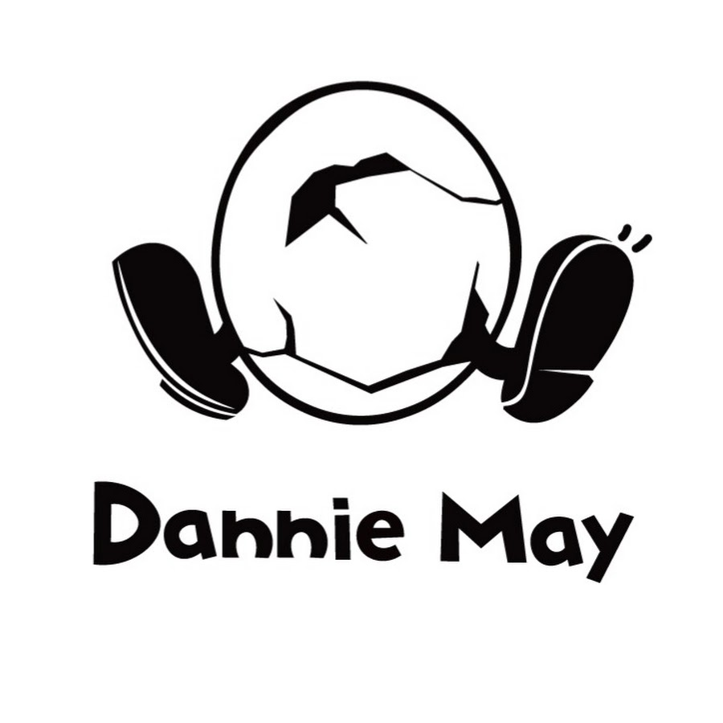

J-POP / ROCK
Dannie May
2026년 8월 21일(금) 오후 8:00 · KT&G 상상마당 라이브홀확인된 공연 일정
현재 공식 확인된 한국 공연은 1회입니다. 추가 회차나 운영 변경은 연결된 공식 출처에서 다시 확인합니다.
아티스트 소개
서로 다른 세 보컬의 화음에 록, 팝과 펑크의 리듬을 섞는 일본 밴드입니다. 한국 스트리밍 차트에서 주목받은 뒤 처음으로 서울 단독공연을 엽니다.
Dannie May 아티스트 페이지 →공연장 교통 안내
서울 홍대 권역에 있으며 지하철 2호선 홍대입구역과 6호선 상수역에서 걸어갈 수 있습니다. 주말 저녁에는 주변이 혼잡하므로 번호별 대기와 물품 보관 안내를 미리 확인하세요.
교통편과 출입구는 당일 운영 상황에 따라 달라질 수 있습니다. 출발 전 주최사와 공연장 공지를 다시 확인하세요.
예매 준비 팁
NOL 티켓 로그인, 본인인증과 배송지 정보를 미리 점검하세요. 단독판매 공연은 공지 페이지와 실제 상품 페이지가 별도로 열릴 수 있습니다.
- 예매 계정의 본인인증과 결제수단을 미리 확인하세요.
- 선예매 대상과 매수 제한, 취소 수수료를 공식 공지에서 확인하세요.
- 공식 예매처 이외의 개인 간 거래는 피해 위험이 있습니다.
공연 당일 체크리스트
- 2026년 8월 21일(금) 오후 8:00 공연입니다. 현장 수령과 입장 대기를 고려해 여유 있게 도착하세요.
- KT&G 상상마당 라이브홀까지의 이동 경로와 공연 종료 뒤 이용할 교통편을 함께 확인하세요.
- 일반예매 기록은 2026년 6월 4일(목) 오후 7:00입니다. NOL 티켓의 최신 공지를 다시 확인하세요.
- 현재 기록된 선예매 일정이 없습니다. 팬클럽과 주최사 공지를 함께 확인하세요.
대표곡 미리 듣기
ええじゃないか, 未完成婚姻論, ぐーぐーぐー 순서로 들어보면 Dannie May의 음악 색깔을 빠르게 파악할 수 있습니다. 각 곡은 공식 YouTube 영상으로 연결됩니다.
Dannie May 공연을 더 잘 즐기는 법
여일육 작성 · 편집·검증 기준 · 마지막 일정 검증 2026-08-15
이번 공연의 관전 포인트
Dannie May는 세 멤버가 리드 보컬과 코러스를 빠르게 주고받는 밴드라 음원보다 라이브에서 각 목소리의 차이가 더 뚜렷합니다. 밝은 리듬 속에 비틀린 감정을 담는 곡이 많아 후렴뿐 아니라 벌스의 가사와 화음도 함께 들어보면 좋습니다. 첫 내한 단독공연인 만큼 가까운 거리에서 밴드의 합주와 보컬 호흡을 확인할 수 있습니다.
공연 전에 듣는 순서
'ええじゃないか'로 세 보컬과 중독적인 리듬을 먼저 익히고, 한국에서 특히 주목받은 '未完成婚姻論'의 화음과 후렴을 비교해 보세요. 'ぐーぐーぐー'는 빠른 템포와 관객 반응이 잘 살아나는 곡입니다. 세 곡을 이어 들으면 밴드의 팝 감각과 라이브 에너지를 고르게 파악할 수 있습니다.
조회수 높은 대표곡 3곡 입문 순서
- ええじゃないか
세 보컬이 짧은 구절을 주고받으며 리듬을 밀어 올리는 대표곡입니다. 반복되는 후렴과 코러스가 라이브에서 어떻게 겹치는지 먼저 익혀 보세요.
- 未完成婚姻論
한국 스트리밍 차트에서 특히 주목받은 곡입니다. 부드러운 도입에서 화음이 커지는 과정과 기억하기 쉬운 후렴에 집중해 보세요.
- ぐーぐーぐー
빠른 템포와 장난스러운 보컬 전환이 돋보입니다. 공식 라이브 영상으로 관객이 박자와 후렴에 반응하는 방식까지 확인할 수 있습니다.
공연장 도착과 귀가 계획
KT&G 상상마당 라이브홀은 전석 스탠딩이며 입장 번호 순으로 들어갑니다. 상수역과 홍대입구역에서 이동할 수 있지만 금요일 저녁 홍대 거리가 혼잡하므로 집합 시각보다 여유 있게 도착하세요. 큰 짐과 화장실 이용은 번호별 대기 전에 해결하고 공연 종료 뒤 귀가 경로도 미리 정해 두는 편이 좋습니다.
공연별 실제 예매 분석
공식 예매처 기준 · 마지막 확인 2026-08-12
- 좌석 등급과 가격
- 전석 스탠딩 88,000원
- 선예매·일반예매 조건
- 별도 선예매는 공지되지 않았고 일반예매는 2026년 6월 4일 19시에 열렸습니다. 1인 2매 제한입니다.
- 본인 확인
- 직계가족 외 대리수령과 양도가 허용되지 않습니다. 가족 명의 예매 시 가족관계 증빙과 예매자·관람자 실물 신분증이 모두 필요합니다.
- 티켓 수령·모바일 티켓
- 초기 예매분은 2026년 8월 3일부터 4일까지 일괄 배송됩니다. 이후 예매자는 공연 당일 현장수령 대상입니다.
- 취소표가 풀리는 방식
- 공연 전일 17시까지 예매할 수 있으며 이후 변경·취소·환불이 불가합니다. 배송 티켓은 취소 마감 전에 예매처로 반환해야 합니다.
공식 출처와 검증 기록
마지막 검증일: 2026-08-15 · 이후 공식 발표로 정보가 변경될 수 있습니다.